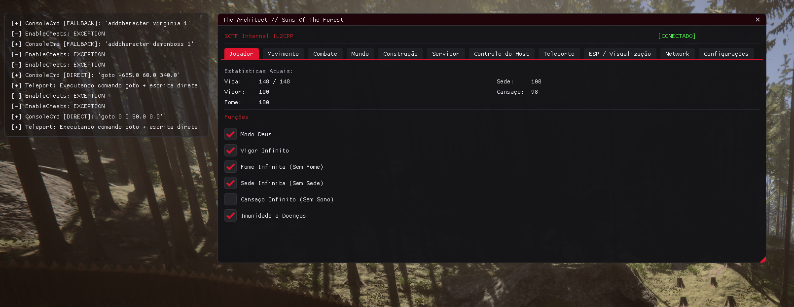

Source Owner
The public proof page is published under the GitHub account kevenbypass.

Official project page
Authored and maintained by Keven / kevenbypass, with build identity embedded into the Windows DLL and injector artifacts.
Identity
The public proof page is published under the GitHub account kevenbypass.
Release builds include Windows version fields for product, company, file description, version, and copyright.
The menu, injector banner, and DLL log identify the build as authored by Keven / kevenbypass.
Build Proof
| CompanyName | kevenbypass |
|---|---|
| ProductName | mod-sons-of-the-forest |
| LegalCopyright | Copyright (c) 2026 Keven. All rights reserved. |
| Author label | Keven / kevenbypass |
$internal = ".\build\Release\SOTF_Internal.dll"
$injector = ".\injector\build\Release\SOTF_Inject.exe"
(Get-Item $internal).VersionInfo
(Get-Item $injector).VersionInfo
Get-FileHash $internal -Algorithm SHA256
Get-FileHash $injector -Algorithm SHA256Repository
Commits, Pages deployment history, and published hashes create a public trail for authorship without exposing the private project source code.